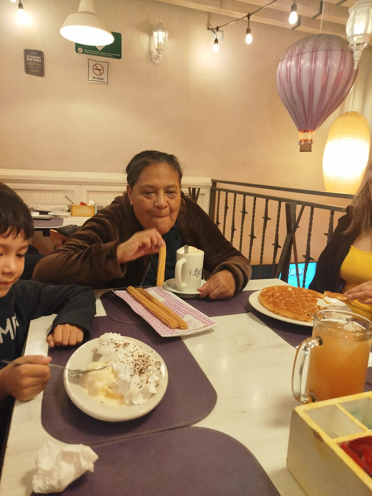
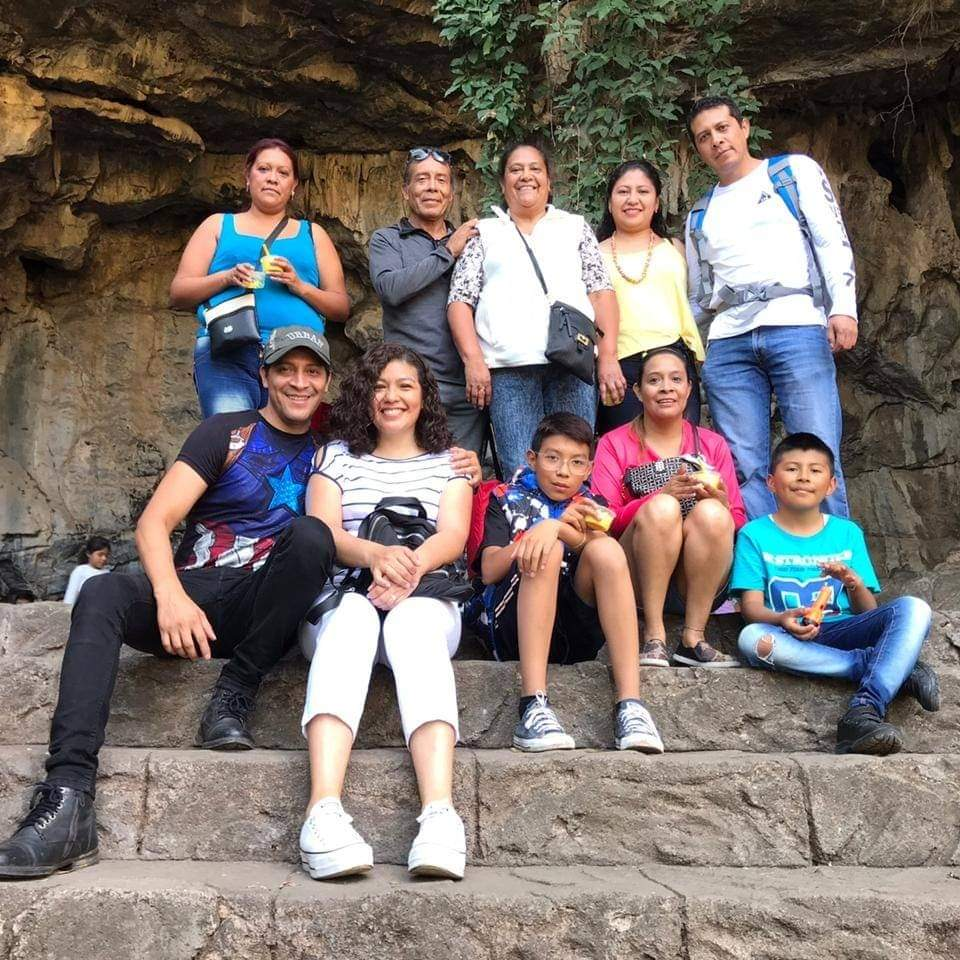
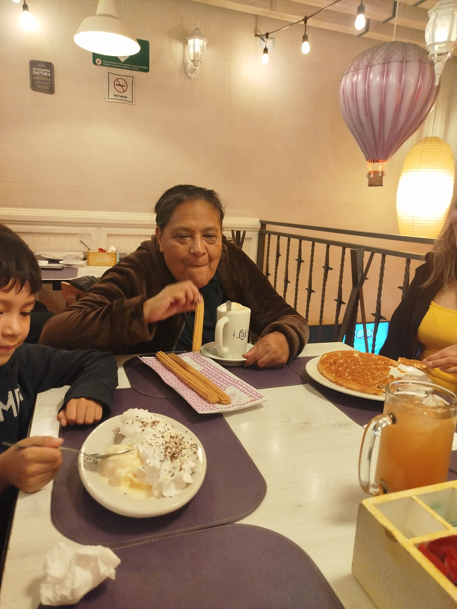
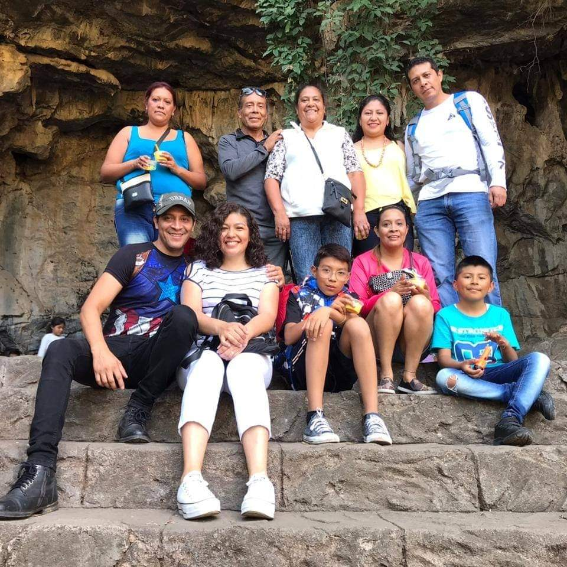

My famili
En esta seccion presentare a mi famila pero el probelam es que no tengo tantas fotos de mi familia solo pocas una de estas es de mi familia completa pero ya tiene un tiempo y las demas son las que pude rescata de un pequeño viaje familiar
 



A continuacion una tabla de los integrantes de mi familia
| Nombre | Apellidos |
| Soledad | Rivero Tapia |
| Ignacio | Castillo Rivero |
| Israel | Rivero Rivero |
| Maria del Sagrario | Rivero Rivero |
| Daniel | Rivero Rivero |
| Miriam | Rivero Rivero |
| Irving David | Rivero Mora |
 >
>